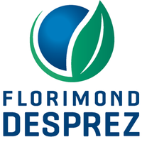

Curriculum Vitae
October 21th, 2021. Pierre-Edouard GUERIN
Computational Biologist
FLORIMOND DESPREZ GROUP
Contact
- Mail: pierre.edouard.guerin [at] gmail.com
- Phone: (+33) 04 67 61 32 35
Experience
Computational biologist
FLORIMOND DESPREZ Research Unit Applied Genetics and Biometry, Cappelle-en-Pevele
I bring my skills and support to the field crops selection department by improving or designing methods to process omics data.
python R C++ rust Singularity Docker SLURM Nextflow Jupyter notebookSoftware Development engineer (Bioinformatics)
CNRS Research Unit 5175, Center of Functional Ecology and Evolution, Montpellier
I develop softwares for the analysis and visualization of data from high-throughput DNA sequencing (genomics, metagenomics, environmental DNA). I also ensure technology watch to implement new data processing methods and optimize scientific reproducibility.
python R C++ Singularity Docker SGE SLURM Snakemake Jupyter notebookBioinformatics engineer internship
INSERM Research Unit S598, Genetics of Diabetes, Paris
I developed and integrated a functionnality and its graphical interface to a medical software. It aims to detect and annotate rare genetic variants related to diabetes on human genome sequence data.
python Qt mySQL DockerBioinformatics engineer internship
INSERM Research Unit S1134, Dynamics of Structures and Interactions of Macromolecules in Biology, Paris
Implementation of an algorithm to predict 3D-modelisation of protein structure at atomic resolution.
C C++ postgreSQL HTML CSS JavascriptEducation
- 2016: M.Sc. in Bioinformatics, Université Paris Diderot, France
- 2014: Licence in Bioinformatics, Université Paris Diderot, France
Projects
FLORIMOND DESPREZ Group
My projects for the company are confidentials. Please contact me for more information.
Public research





Softwares
Florimond Desprez Group
- My software developed for the company is confidential. Please contact me for more information.
Public research
- WFGD (main contributor): interactive worldmap of fish genetic diversity.
- ANVAGE (main contributor): ANnotation Variants GEnome is a python toolkit software to perform routine operations such as detecting synonymous genetic variants from VCF, GFF3 and FASTA genome files.
- Rgeogendiv (main contributor): R package for downloading, preparing and aligning georeferenced DNA sequences on Genbank to calculate genetic diversity at different geographical scales
- Workflow to process environmental DNA sequencing data (main contributor): this workflow is open-source and was co-developped by the CEFE (main invistigator) and the company SPYGEN (data and tests), including interactions IFREMER, ETH Zurich and the marine explorations of Monaco.
- Workflow to genotype reduced genome sequencing data (main contributor): this workflow processed over 3000 fish genomes in the context of the european project RESERVEBENEFIT in collaboration with Helmholtz-Zentrum für Ozeanforschung Kiel and Instituto Español de Oceanografía.
- Genbar2 (main contributor): identify genetic boundaries between populations using individual spatial coordinates and genetic variants.
- DEMORT (main contributor): a DEmultiplexing MOnitoring Report Tool
- EXAM(contributor): a whole exome sequencing analysis and its graphical interface
- ORION (contributor): a sensivitive method for protein template detection
Publications
Use of environmental DNA in assessment of fish functional and phylogenetic diversity
Virginie Marques, Paul Castagne, Andréa Polanco Fernandez, Giomar Helena Borrero-Perez, Regis Hocde, Pierre-Edouard Guerin, Jean-Baptiste Juhel, Laure Velez, Nicolas Loiseau, Tom Bech Letessier, Sandra Bessudo, Alice Valentini, Tony Dejean, David Mouillot, Loïc Pellissier, Sébastien Villéger
Conservation Biology. 2021 July 18. DOI: 10.1111/cobi.13802
Restricted dispersal in a sea of gene flow
Laura Benestan, Nicolas Loiseau, Pierre-Edouard Guerin, Katarina Fietz, Elena Trofimenko, Siren Rühs, Willi Rath, Arne Biastoch, Angel Perez-Ruzafa, Pilar Baixauli, Aitor Forcada, Philippe Lenfant, Sandra Mallol, Rachel Goni, Laure Velez, Marc Höppner, Stuart Kininmonth, David Mouillot, Oscar Puebla, Stephanie Manel
Proceedings of the Royal Society B. 2021 May 18. DOI: 10.1098/rspb.2021.0458
Benchmarking bioinformatic tools for fast and accurate eDNA metabarcoding species identification
Laetitia Mathon, Alice Valentini, Pierre-Edouard Guerin, Eric Normandeau, Cyril Noel, Clément Lionnet, Emilie Boulanger, Wilfried Thuiller, Louis Bernatchez, David Mouillot, Tony Dejean, Stephanie Manel
Molecular Ecology Resources. 2021 May 17. DOI: 10.1111/1755-0998.13430
Blind assessment of vertebrate taxonomic diversity across spatial scales by clustering environmental DNA metabarcoding sequences
Virginie Marques, Pierre‐Edouard Guerin, Mathieu Rocle, Alice Valentini, Stephanie Manel, David Mouillot, Tony Dejean
Ecography. 2020 Aug 04. DOI: 10.1111/ecog.05049
New genomic ressources for three exploited Mediterranean fishes
Katharina Fietz, Elena Trofimenko, Pierre-Edouard Guerin, Veronique Arnal, Montserrat Torres-Oliva, Stephane Lobreaux,Angel Perez-Ruzafa, Stephanie Manel, Oscar Puebla
Genomics. 2020 July 03. DOI: 10.1016/j.ygeno.2020.06.041
Global determinants of freshwater and marine fish genetic diversity
Stephanie Manel, Pierre-Edouard Guerin, David Mouillot, Simon Blanchet, Laure Velez, Camille Albouy & Loic Pellissier
Nature communications. 2020 Feb 10. DOI: 10.1038/s41467-020-14409-7
Predicting genotype environmental range from genome–environment associations
Stephanie Manel, Marco Andrello, Karine Henry, Daphne Verdelet, Aude Darracq, Pierre‐Edouard Guerin, Bruno Desprez, Pierre Devaux
Molecular Ecology. 2018 May 17. DOI: 10.1111/mec.14723
ORION : a web server for protein fold recognition and structure prediction using evolutionary hybrid profiles
Yassine Ghouzam, Guillaume Postic, Pierre-Edouard Guerin, Alexandre G. de Brevern & Jean-Christophe Gelly
Scientific Reports. 2016 Jun 20. DOI: 10.1038/srep28268
Other activities
Sciences
- My scientific blog
- Member of the association of Young French Bioinformaticians Jebif
- Author on french bioinformatics participative blog bioinfo-fr
- My data science skills demo (linear regression, random forest, neural network, bayesian, deep learning) using python ecosystem for machine learning (pandas, numpy, tensorflow, scikit-learn) training on kaggle.
Personnal projects

- speckyman: a platform game developed in JavaScript
- fromdnatomusic: convert DNA sequences into MIDI track and listen to it
- Nos data ont du talent: a youtube channel dedicated to data visualisation
Triathlon
I'm an active member of the USN-MONTPELLIER sportive club since 2017. Join us !